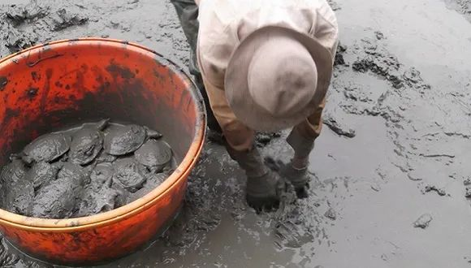
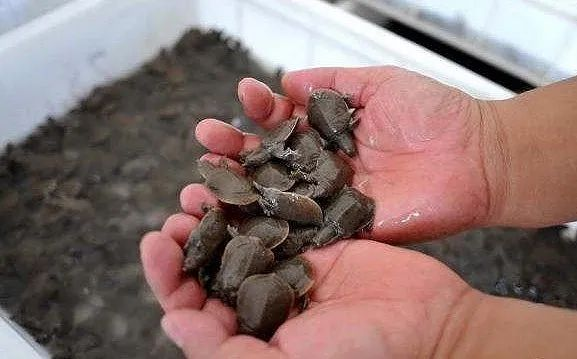

全面禁食？2500万网红竹鼠等待判决
原文链接 备份链接 图片来源：视觉中国 记者：刘林 “ 在全面封控的过程中，竹鼠养殖户们对未来仍抱有期望，但全面禁止食用“三有动物”的决定可能会给长期处于灰色地带的竹鼠养殖业带来致命一击。 ” 过去两年走红网络的竹鼠，因为被点名为“可能携 …

来源：受访者提供
记者：卢奕贝 编辑：牙韩翔
“
陈泽表示，如果有可能的话，政府出台一个规范性的文件，指导养殖户怎么去养殖、出售，这个才是关键。
”
自1月26日大年初二开始，陈泽的甲鱼一只都卖不出去了。
陈泽是广东揭阳的一名甲鱼养殖户，从业已有10年了。原本他的甲鱼有八成会供给广州、深圳的水产市场销售，剩下的零散在淘宝上销往全国各地。然而今年为了防控疫情，广州早在1月底便已全面封禁了甲鱼销售的主要集中地黄沙市场，线上销售也逐渐停摆。
他只能苦苦等待，祈祷疫情好转。但更先到来的，是全国禁止食用和买卖野生动物的各项规定。
2020年2月25日，深圳率先强力“禁野”，点名将“甲鱼”排除在可食用动物范围之外。
深圳市人大常委会法工委在深圳市人大官方网站上发布了一则《深圳经济特区全面禁止食用野生动物条例（草案征求意见稿）》（下称《征求意见稿》）。相关负责人特别解释道，对于社会比较关注的经人工繁育、饲养的龟、甲鱼等野生动物，也具有不小的疫病传播风险，无法保证食用的安全性，此次也将上述动物排除在可食用动物范围之外。
“反正如果不能养的话，真的就手停口停。”每年炎热的6、7月份，陈泽会在自己的4亩水塘里洒下苗子，细心养护，等待12个月后甲鱼的长成。到那时，他才能完全收获这一年辛勤劳动的成果，大约是40万元。这也是他一家老小生计的来源。今年，他只能望着水塘还在不断长大的甲鱼，不知如何是好。
这样的甲鱼养殖户在陈泽的村子里还有很多。经过20年的积累，整个村子甲鱼养殖的从业人员将近5000人，占全村人口的4成。用于养殖的土地面积达1000亩，每年需要消耗5000万的甲鱼苗，产值高达一个亿。但如今，这些全部停滞。
“像我们村整个4成人就可以说都没有收入了。”陈泽以及村里的同行，除了无法处理已经养成的甲鱼外，也并没有办法转卖转养其他水产品。
由于甲鱼是两栖动物，适合养甲鱼的水质并不适合去养鱼虾，贸然转行，也并不确保能养成。而且即使要转，目前村里已经建成的厂房、硬件设施全部都得卖掉。

甲鱼苗子在夏天被放到水塘里，一年之后再捕捞上来。
这只是整个甲鱼产业链的一个小小缩影。
在广东地区，食用甲鱼进补已成为一种传统，它的身影遍布南方。广东珠江卫视的特约评论员饶原生也曾提供过一组数据：广东目前有龟鳖类养殖场点9万个，从业人员34万人，现行总产值近千亿元。他同时表示，如果不问青红皂白全部禁止交易和食用，恐怕影响很大。
陈泽认为，如果只论甲鱼这个品类，是不是野生的非常好辨认，直接全面禁止太过绝对。“如果有可能的话，政府出台一个规范性的文件，指导养殖户怎么去养殖、出售，这个才是关键。”
在疫情爆发以前，根据2016年的《中华人民共和国野生动物保护法(修订草案)》，国家只规定了禁止食用的野生动物为国家重点保护动物。其他非国家重点保护野生动物并未被纳入禁止食用范畴。草案同时提出，此举并非提倡食用非国家重点保护野生动物，而是在现有情况下，食用野生鱼、野兔子等未尝不可，法律不禁止，但也不提倡。
甲鱼属于鳖类动物。但多数鳖类动物已经被列入《国家重点保护动物名录》及《国家保护的有益或者有重要经济、科学研究价值的陆生动物名录》和《国家水生野生动物保护名录》。
根据《中华人民共和国野生动物保护法》，个人或企业驯养繁殖任何一种龟鳖动物都必须办理驯养繁殖许可证；如果驯养目的为经营利用的，还需要办理《野生动物驯养繁殖许可证》，并向工商行政管理部门申请登记注册。
而在深圳《征求意见稿》出台的第二天，2020年2月26日，广州政府便召开新闻发布会，表示除了家畜家禽类，禁食所有陆生野生动物。
随后，2月27日，全国人大常委会也做出全面禁野的进一步决定。从2月27日起，全国范围内的食用野生动物市场和交易将被彻底取缔。凡是从事以食用为目的的野生动物人工繁育，许可证都要撤销。
这就意味着，全国饲养繁殖与买卖野生动物的行业全面取缔。在这个规定下，被列入水生野生动物范畴内的甲鱼，也不能在被人工饲养与销售。
面对各种政策，陈泽仍表示理解，但他仍计划着与村里的养殖户、经销商一起，联名向有关部门反映他们的困难，希望政府能将甲鱼养殖规范化和标准化，而非直接让村里的池塘变成一潭死水。
（应采访对象要求，文中“陈泽”为化名）
END
点击图片查看相关内容

未经授权 禁止转载

文章已于修改
原文链接 备份链接 图片来源：视觉中国 记者：刘林 “ 在全面封控的过程中，竹鼠养殖户们对未来仍抱有期望，但全面禁止食用“三有动物”的决定可能会给长期处于灰色地带的竹鼠养殖业带来致命一击。 ” 过去两年走红网络的竹鼠，因为被点名为“可能携 …
原文链接 备份链接 28.01.2020本文字数：2678，阅读时长大约4分钟 导读：随着新型冠状病毒的溯源工作的开展，华南海鲜市场几乎被锁定为疫情的源头，尽管该市场关闭前所销售的野生动物目前的去向我们不得而知，武汉官方也未做任何披露。 …
原文链接 备份链接 经济观察网 记者 于惠如 2月25日晚，深圳市人大常委会官方网站发布关于《深圳经济特区全面禁止食用野生动物条例（草案征求意见稿）》（以下简称：《征求意见稿》）公开征求意见的公告。其中，列明了禁食野生动物、可食动物名单， …
原文链接 备份链接 作者 | 第一财经 章轲 水貂、狐狸、貉子的毛皮穿在身上了，肉去哪了？这些野生动物的肉能吃吗？今天（26日），这个问题又有人提出来了。 2月24日召开的十三届全国人大常委会第十六次会议，表决通过了《全国人大常委会关于全 …
原文链接 备份链接 史上最严禁“野”令，效果如何有待观察 2月24日下午，全国人大常委会表决通过关于全面禁止非法野生动物交易、革除滥食野生动物陋习、切实保障人民群众生命健康安全的决定（下称《决定》），自公布之日起施行。 北京大学保护生 …